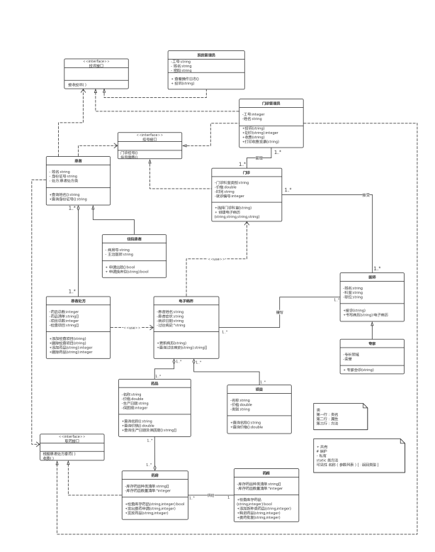

实验报告(类图)
-------------------------------------------------------------
学生姓名:王若凡 学号:161810308
孙茜茹 161810101
方丹枫 161820304
陈楚燚 161830218
姜志杰 161830318
实验地点:计算机实验楼104
实验时间:2019/11/8
-------------------------------------------------------------
一.实验名称
校医院门诊管理系统类图构建
二.实验目的
(1)理解类的基本概念,类之间的关系,类的规约描述等等;
(2)掌握如何从需求分析中抽象出类,并构建类图的方法;
(3)掌握如何使用UML相关编辑工具绘制类图的过程与方法。
三.实验内容与步骤
实验内容：
用作图工具结合已经画好的用况图完成校医院门诊管理系统类图的构建。
实验步骤：
1）定义类；
2）定义类的名称，重要属性，关键操作；
3）定义不同类之间的关系（尽可能寻找并使用各种不同类型的关系）；
4）针对核心类用规约描述其主要功能和与其相关联类的关系；
5）注意类图与之前画的用况图在逻辑上对应一致；
6）检查类图并写实验报告。
四.实验结果
模型截图：

模型规约说明：
1.类“患者处方”
该类具有属性“药品清单” ，“药品数量” ， “项目名称”， “ 项目数量”，由于处方是根据病历开的，所以它与类“ 电子病历”具有依赖关系。在该类中要设立操作“ 添加药品”，“ 删除药品”，“ 添加项目”，“ 删除项目”供医师操作。它这些操作的前置条件是电子病历已经写好，然后才能决定患者处方。此外，患者需要根据处方到药房拿药，所以患者处方与药房具有关联关系。
|
类名：患者处方 简述：该类具有属性 “药品清单” ，“药品数量 ”，“ 项目名称”， “项目数量” ，这些属性都是私有的。操作：“添加药品 ”，“ 删除药品”， “添加项目” ，“删除项目 ” 关系说明： “患者” 处方与“药房 ”具有关联关系，与“ 电子病历”具有依赖关系 操作详述:操作 “添加药品” 执行之后，相应的药品清单也会发生改变，同理，执行“添加/ 删除项目” 之后，项目数量也会改变 约束条件：电子病历已经写好 |
2.类“药品 ”
该类具有属性“药品名称 ”，“价格 ”，“生产日期 ”，“保质期 ”，它与类“电子病历 ”具有聚合关系，药品和项目都是电子病历的组成部分。
该类具有操作“查询药品名称 ”，“查询药品价格 ”，“查询药品生产日期和保质期 ”等操作 ，因为药品是要从药房里拿的，所以药品和药房有聚合关系，药房可以有添加药品，发放药品等操作。
|
类名：药品 简述：该类具有属性 “药品名称” ，“价格 ”，“ 生产日期”， “保质期” 操作：“查询药品名称 ”，“查询药品价格 ”，“查询药品生产日期和保质期 ” 操作说明：“ 查询药品名称”用到属性 “药品名称” ，“查询药品价格 ”用到属性“ 价格”， “查询药品生产日期和保质期” 用到属性“生产日期和保质期 ” 关系说明： “药品” 与“药房 ”具有聚合关系，“ 药品”与 “电子病历” 具有聚合关系 细节描述:药品需要从药房取出，如果药房库存充足，直接取药；如果库存不足，药房还需向 药库发出提药申请，然后药库同意批复，再将药品发给药房。 |
该类具有属性“姓名 ”，“科室 ”，“职位 ”，它与类“门诊 ”具有关联关系，因为医师的实例需要接受门诊传来的挂号信息；“专家 ”类继承“医师 ”类，具有“医师 ”类相关的属性和操作，此外还有“专长领域 ”“荣誉”等区别于医师的属性。
|
类名：医师 简述：该类具有属性 “姓名” ，“科室 ”，“ 职位” 操作：“接诊 ”，“书写电子病历 ” 关系说明：“专家 ”类继承“ 医师”类 ,专家类有 “专长领域”“ 荣誉”等区别于医师的属性。 |
五．分析与总结
在画类图时，我们首先从用况图中捕捉类，然后找出其中类的潜在关系，之后简单定义了相关属性和操作。但是在类图逐渐完善的过程中，我们渐渐发现有些类的名称和它与其他类的关系都有一些不合理之处 ，因而做出了修改（例如 删除继承门诊类病房门诊，将电子病历和门诊之间的关联关系最后修改为依赖 ）。
在写类的模型规约时发现对许多类的属性描述不太准确，容易有歧义，并且漏掉了一些重要属性。在修改的过程中又不断思索类与类之间的关系。
通过在类图中添加接口的过程中，我们对接口的理解也更加深入，面向对象设计中我们追求的原则之一就是高内聚，低耦合，但是类与类之间总是会避免不了有着千丝万缕的关系，而使用接口就可以将一个类对另一个类的依赖性降到最低。